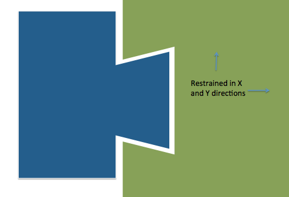
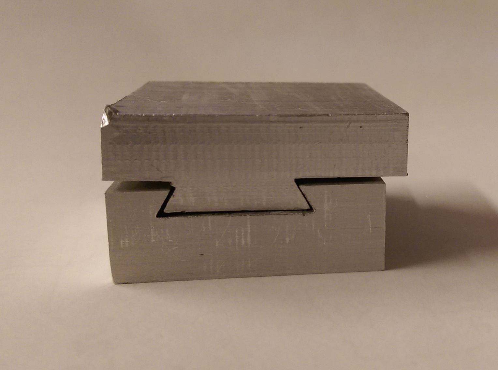
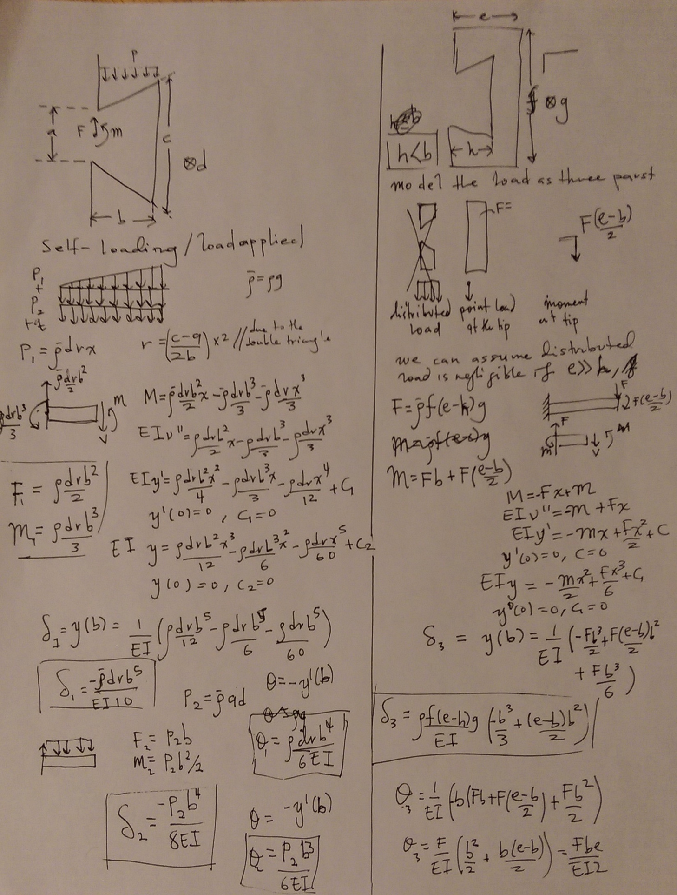
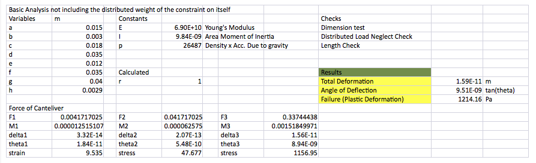
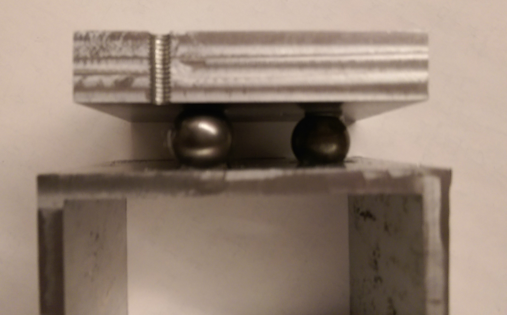
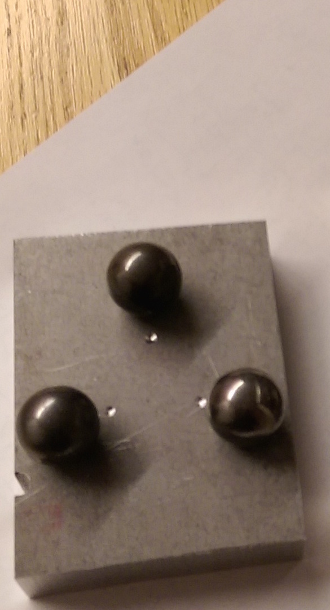

Practical Uploadable Problem Set #2
Peer Reviewers: Maria Ruiz, Akwasi Owusu-Akyaw
Exact Planar Constraint
For my exact constraint design, I wanted to try something new and unconventional. Inspired by tool changing utilized in lathes, I decided to use dovetails to constrain my object within the primary plane.

This allows the object to be slide out and placed in the reverse direction. The analysis of the loads experienced by the object is show below. The configuration is such tha gravtiy acts on the object and the standard beam theory was applied.

The loads experinced by the object are due to itself and the object attached to it. It's own load was a non uniform distrubition. The load of the object was modelled as a point load and moment at the tip (the load of the portion on the beam can be included by adding its load distribution to that of the beam)
. Results of the analysis are shown in the table below.

The spreadsheet used in the analysis may be found at
dovetail_deflection.xlsx.
Brainware and Hardware
Kinematic Coupling
For my kinematic coupling, I decided to do a variant of the Maxwell Kinematic Coupling. I decided on have perpendicular slots (forming an inverted 'T'). The asymmetry means the coupling is less resilient to rotation, but it has increased resistance to forces along in the y-direction.

The error apportnment and locking capabilites of the linear motion axis is in the proceeding sheet. The mechanism is simple: a carriage (block) in a precisely fitting slot.
slider_analysis.xlsx
Seek and Geek
This week's Seek and Geek is a very simple mechanism. I've been very fascinated by mechanical devices and often times the simplest are the most impressive. The ratchet is my seek and geek for this week because it a highly simple mechanism but it is robust and used in many places. It allows (rotational) motion in one direction and can be used in hoist, wrenches, handcuffs and clocks.